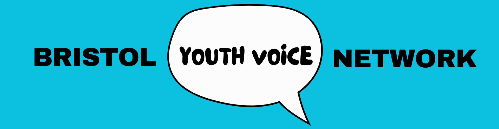

Join young people, practitioners, commissioners and community organisations from across Bristol to explore how youth voice can influence decision making, strengthen services and drive meaningful change across the city.
The Network organises a small number of meetings, events and learning opportunities throughout the year. These may include: